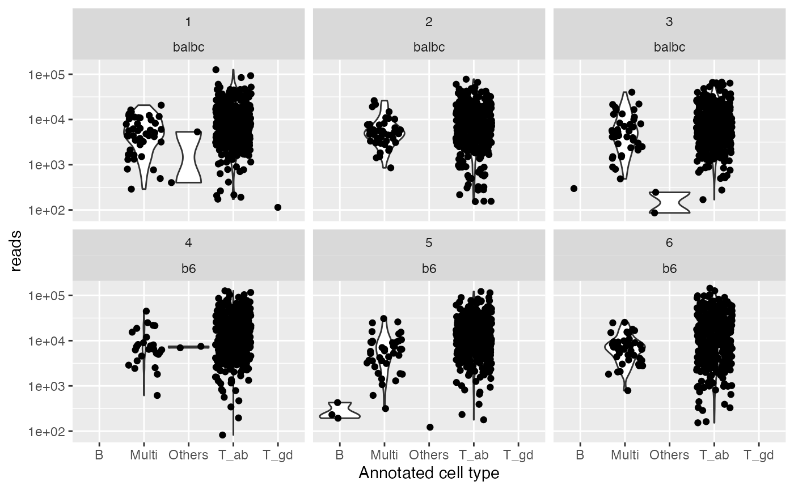

Quality control and Exploration of UMI-based repertoire data
Source:vignettes/mouse_tcell_qc.Rmd
mouse_tcell_qc.RmdThis vignette shows an example of loading data from the CellRanger
pipeline and doing some QC to pick barcodes. If gene expression was also
collected, it is better to do joint cell calling.
Some types of multiplets / debris can be better assessed with by using
the gene expression data. See
vignette('repertoire_and_expression') for details of how to
merge repertoire with a SingleCellExperiment object.
library(CellaRepertorium)
library(dplyr)
#>
#> Attaching package: 'dplyr'
#> The following objects are masked from 'package:stats':
#>
#> filter, lag
#> The following objects are masked from 'package:base':
#>
#> intersect, setdiff, setequal, union
library(ggplot2)
library(readr)
library(tidyr)
library(stringr)Load contig files
files = list.files(system.file('extdata', package = 'CellaRepertorium'), pattern = "all_contig_annotations_.+?.csv.xz", recursive = TRUE, full.names = TRUE)
# Pull out sample and population names
samp_map = tibble(anno_file = files, pop = str_match(files, 'b6|balbc')[,1], sample = str_match(files, '_([0-9])\\.')[,2])
knitr::kable(samp_map)| anno_file | pop | sample |
|---|---|---|
| /private/var/folders/7m/c_l3kv2d2z118lwkj5jpy2h40000gn/T/RtmpTNeai5/temp_libpathf7cb3d4472ec/CellaRepertorium/extdata/all_contig_annotations_b6_4.csv.xz | b6 | 4 |
| /private/var/folders/7m/c_l3kv2d2z118lwkj5jpy2h40000gn/T/RtmpTNeai5/temp_libpathf7cb3d4472ec/CellaRepertorium/extdata/all_contig_annotations_b6_5.csv.xz | b6 | 5 |
| /private/var/folders/7m/c_l3kv2d2z118lwkj5jpy2h40000gn/T/RtmpTNeai5/temp_libpathf7cb3d4472ec/CellaRepertorium/extdata/all_contig_annotations_b6_6.csv.xz | b6 | 6 |
| /private/var/folders/7m/c_l3kv2d2z118lwkj5jpy2h40000gn/T/RtmpTNeai5/temp_libpathf7cb3d4472ec/CellaRepertorium/extdata/all_contig_annotations_balbc_1.csv.xz | balbc | 1 |
| /private/var/folders/7m/c_l3kv2d2z118lwkj5jpy2h40000gn/T/RtmpTNeai5/temp_libpathf7cb3d4472ec/CellaRepertorium/extdata/all_contig_annotations_balbc_2.csv.xz | balbc | 2 |
| /private/var/folders/7m/c_l3kv2d2z118lwkj5jpy2h40000gn/T/RtmpTNeai5/temp_libpathf7cb3d4472ec/CellaRepertorium/extdata/all_contig_annotations_balbc_3.csv.xz | balbc | 3 |
PBMC pooled from BALB/c and C57BL/6 mice were
assayed on 10X genomics V3 chemistry and a library enriched for TCR
were run. For the purposes of illustrating functionality in this
package, cell barcodes were subsampled 3 times for each of the BALB/c
and Black6 pools to generate distinct samples, which is
reflected in the sample column. More details are available
in the scripts in the script directory of this package.
# read in CSV
all_anno = samp_map %>% rowwise() %>% mutate(anno = list(read_csv(anno_file, col_types = cols(
barcode = col_character(),
is_cell = col_logical(),
contig_id = col_character(),
high_confidence = col_logical(),
length = col_double(),
chain = col_character(),
v_gene = col_character(),
d_gene = col_character(),
j_gene = col_character(),
c_gene = col_character(),
full_length = col_logical(),
productive = col_character(),
cdr3 = col_character(),
cdr3_nt = col_character(),
reads = col_double(),
umis = col_double(),
raw_clonotype_id = col_character(),
raw_consensus_id = col_character()
))))
all_anno = all_anno %>% unnest(cols = c(anno)) (The column types typically don’t need to be specified in such
detail, but watch for issues in the high_confidence,
is_cell and full_length columns which may be
read as a character vs logical depending on your specific inputs. Either
is fine, but you will want to be consistent across files.)
We read in several files of annotated “contigs” output from 10X genomics VDJ version 3.0.
The pipeline for assembling reads into contigs, and mapping them to UMIs and cells is described in the 10X genomics documentation, and its source code is available here.
cell_tbl = unique(all_anno[c("barcode","pop","sample","is_cell")])
cdb = ContigCellDB(all_anno, contig_pk = c('barcode','pop','sample','contig_id'), cell_tbl = cell_tbl, cell_pk = c('barcode','pop','sample'))Note that initially there are 3818 contigs.
cdb = mutate_cdb(cdb, celltype = guess_celltype(chain))
cdb = filter_cdb(cdb, high_confidence)After filtering for only high_confidence contigs there are 2731 contigs.
We read in the contig annotation file for each of the samples, and annotate the contig as a alpha-beta T cell, gamma-delta T cell, B cell or chimeric “multi” cell type based on where various
High confidence UMIs belonging to T cells per cell
total_umi = crosstab_by_celltype(cdb)
T_ab_umi = total_umi[c(cdb$cell_pk,"is_cell","T_ab")]
ggplot(T_ab_umi, aes(color = factor(is_cell), x = T_ab, group = interaction(is_cell, sample, pop))) + stat_ecdf() + coord_cartesian(xlim = c(0, 10)) + ylab('Fraction of barcodes') + theme_minimal() + scale_color_discrete('10X called cell?')
10X defines a procedure to separate cells from background that fits a Gaussian mixture model to the UMI distributions for each sample. However in some cases, it may be desirable to implement a common QC threshold with a different stringency, such as:
- Comparing across multiple samples
- When a sample has been enriched for a particular cell type (eg with pre-sequencing flow cytometry).
When we consider only high confidence UMIs that unambiguous map to T cells, most “non cells” have 1 or fewer, while most putative cells have >5. However, we might want to adopt a different UMI-based cell filter, as was done below.
Reads / UMIs
qual_plot = ggplot(cdb$contig_tbl, aes(x = celltype, y= umis)) + geom_violin() + geom_jitter() + facet_wrap(~sample + pop) + scale_y_log10() + xlab("Annotated cell type")
qual_plot
#> Warning: Groups with fewer than two data points have been dropped.
#> Groups with fewer than two data points have been dropped.
#> Groups with fewer than two data points have been dropped.
qual_plot + aes(y = reads)
#> Warning: Groups with fewer than two data points have been dropped.
#> Groups with fewer than two data points have been dropped.
#> Groups with fewer than two data points have been dropped.
The number of UMIs and reads by sample and annotated cell type.
Apply T-cell contig UMI filter
# At least 2 UMI mapping to high confidence T cell contigs.
good_bc = total_umi %>% ungroup() %>% filter(is_cell) %>% filter(T_ab >= 2)
total_cells = good_bc %>% group_by(sample, pop) %>% summarize(good_bc = n())
#> `summarise()` has grouped output by 'sample'. You can override using the
#> `.groups` argument.
knitr::kable(total_cells)| sample | pop | good_bc |
|---|---|---|
| 1 | balbc | 133 |
| 2 | balbc | 137 |
| 3 | balbc | 143 |
| 4 | b6 | 149 |
| 5 | b6 | 150 |
| 6 | b6 | 148 |
Apply a filter on UMIs.
contigs_qc = semi_join(cdb$contig_tbl, good_bc %>% select(sample, pop, barcode)) %>%
filter(full_length, productive == 'True', high_confidence, chain != 'Multi')
#> Joining, by = c("pop", "sample", "barcode")And take only high confidence, full length, productive \(\alpha-\beta\) T cell contigs.
Colophone
sessionInfo()
#> R version 4.1.2 (2021-11-01)
#> Platform: aarch64-apple-darwin20 (64-bit)
#> Running under: macOS Monterey 12.3.1
#>
#> Matrix products: default
#> BLAS: /Library/Frameworks/R.framework/Versions/4.1-arm64/Resources/lib/libRblas.0.dylib
#> LAPACK: /Library/Frameworks/R.framework/Versions/4.1-arm64/Resources/lib/libRlapack.dylib
#>
#> locale:
#> [1] en_US.UTF-8/en_US.UTF-8/en_US.UTF-8/C/en_US.UTF-8/en_US.UTF-8
#>
#> attached base packages:
#> [1] stats graphics grDevices utils datasets methods base
#>
#> other attached packages:
#> [1] stringr_1.4.0 tidyr_1.2.0 readr_2.1.2
#> [4] ggplot2_3.3.5 dplyr_1.0.8 CellaRepertorium_1.7.1
#> [7] BiocStyle_2.22.0
#>
#> loaded via a namespace (and not attached):
#> [1] Rcpp_1.0.8 Biostrings_2.62.0 assertthat_0.2.1
#> [4] rprojroot_2.0.2 digest_0.6.29 utf8_1.2.2
#> [7] R6_2.5.1 GenomeInfoDb_1.30.1 stats4_4.1.2
#> [10] evaluate_0.15 highr_0.9 pillar_1.7.0
#> [13] zlibbioc_1.40.0 rlang_1.0.2 rstudioapi_0.13
#> [16] jquerylib_0.1.4 S4Vectors_0.32.3 rmarkdown_2.13
#> [19] pkgdown_2.0.2 labeling_0.4.2 textshaping_0.3.6
#> [22] desc_1.4.1 bit_4.0.4 RCurl_1.98-1.6
#> [25] munsell_0.5.0 compiler_4.1.2 xfun_0.30
#> [28] pkgconfig_2.0.3 systemfonts_1.0.4 BiocGenerics_0.40.0
#> [31] htmltools_0.5.2 tidyselect_1.1.2 tibble_3.1.6
#> [34] GenomeInfoDbData_1.2.7 bookdown_0.25 IRanges_2.28.0
#> [37] fansi_1.0.2 tzdb_0.2.0 crayon_1.5.0
#> [40] withr_2.5.0 bitops_1.0-7 grid_4.1.2
#> [43] jsonlite_1.8.0 gtable_0.3.0 lifecycle_1.0.1
#> [46] DBI_1.1.2 magrittr_2.0.2 scales_1.1.1
#> [49] vroom_1.5.7 cli_3.2.0 stringi_1.7.6
#> [52] cachem_1.0.6 farver_2.1.0 XVector_0.34.0
#> [55] fs_1.5.2 bslib_0.3.1 ellipsis_0.3.2
#> [58] ragg_1.2.2 generics_0.1.2 vctrs_0.3.8
#> [61] tools_4.1.2 bit64_4.0.5 glue_1.6.2
#> [64] purrr_0.3.4 hms_1.1.1 parallel_4.1.2
#> [67] fastmap_1.1.0 yaml_2.3.5 colorspace_2.0-3
#> [70] BiocManager_1.30.16 memoise_2.0.1 knitr_1.37
#> [73] sass_0.4.1